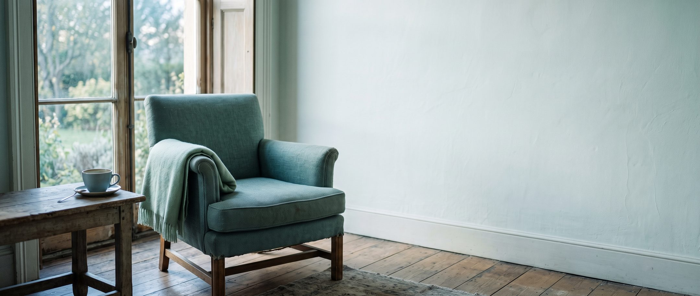

The big launch · The Remission Circle opens [MONTH] · Free live session [DATE]
We built this for you. Let us walk you through it.
The Remission Circle is real, ongoing help for living with an autoimmune condition. Three board-certified physicians, a structured year of teaching, and your questions answered out loud.
On [DATE] we are going to walk you through the whole thing, live, in 60 minutes. Then you decide if it is for you.
Save my seatFree. 60 minutes. Nothing to buy to attend, and we send you the recording either way.
Attendee What does remission actually mean?
[DATE] at [TIME] [TZ]
- 3 board-certified physicians
- A full year of structured teaching
- Your questions answered
- Free to attend

If any of this is your life, this was made for you
You do not need a diagnosis to be in the right place.
-
01
Still trying to get a name for it. More than one specialist, tests that said nothing, and somebody suggesting it was stress, your weight, or your age. You are not imagining it.
-
02
Newly diagnosed. It came with a prescription in twelve minutes, and nobody had time to explain what it means for your job, your family, the next thirty years.
-
03
Unsure about your treatment. You are taking something nobody explained.
-
04
Lost in the advice about how to live. Forty contradictory things about what to eat.
-
05
Wanting the whole picture. Food, movement, sleep and hormones taken seriously alongside your medication, not instead of it.
-
06
Your appointment is months away, the questions started weeks ago, you are exhausted in a way sleep does not touch, and you cancelled something again and apologised again.
None of that is a failure of effort on your part. It is what happens when a lifelong condition meets a system built for twelve-minute visits. So we built something that sits in the gap.
Three physicians who treat this every day, answering your questions properly. Not influencers. Not a search result. Not an AI that has never examined anybody.
It is the Reddit thread where the doctors actually reply.
What you actually get, and what it means
Six things, and why each one matters to you
A live hour every month with all three physicians
Your question, answered out loud, by the doctor who covers that area. Not a forum reply. A rheumatologist thinking through it while you listen.
Written Q&A with the team
You can ask between sessions and get a clear written answer, instead of waiting four months or guessing from a search result.
New lessons every week
You are never more than a few days from something useful, and none of it is internet myth. It is written by the physicians who treat this.
A library of recorded sessions and guides
The 2am library. When something frightens you at midnight, there is a physician’s version to read instead of a forum.
A private community of people with the same conditions
Nobody needs the fatigue explained. Nobody says “but you don’t look sick.” You can say the hard thing and be understood immediately.
A monthly theme, not scattered tips
By the end of a year you understand your own disease properly, rather than collecting fragments you forget by the following week.
A full year, already planned
You are not joining a feed. You are joining a curriculum.
Most health communities are a stream of posts. This is a structured year, mapped in advance, so your understanding builds instead of scattering.
- Month 1
Welcome: who we are and where we are going
- Month 2
Eat to calm the fire: food, movement and inflammation
- Month 3
The gut and immune connection
- Month 4
Decoding your labs: positive ANA and what your bloodwork really means
- Month 5
GLP-1 medications and autoimmune disease
- Month 6
Rheumatoid and psoriatic arthritis
- Month 7
Can you have an autoimmune disease with normal labs?
- Month 8
Menopause, hormones and autoimmune disease
- Month 9
Ankylosing spondylitis: the back pain missed for years
- Month 10
CAR-T and the new drugs changing autoimmune disease
- Month 11
Supplements: what helps, what is hype, what to skip
- Month 12
Choosing the right treatment: medications, biologic safety and smart decisions
Every month is led by whichever of the three of us knows that subject best. You hear from each of us properly across the year.
Exactly what happens in the 60 minutes
The agenda
-
Minutes 0 to 10
Why we built this, and the problem it exists to solve. A rheumatology appointment is twelve minutes, roughly every three months. The questions arrive in the other ninety days.
-
Minutes 10 to 25
The teaching. What “remission” actually means, how your doctor measures it, and why it is not the same as cured. This is the single thing we are asked about most, and most people have never had it explained.
-
Minutes 25 to 32
Dr. Devalla on the back pain that gets missed for years, and why some back pain is worse after rest.
-
Minutes 32 to 40
Dr. Titianu on what genuinely changes inflammation. Food, weight and the newer medications, and what is simply being sold to you.
-
Minutes 40 to 53
Your questions. Sent in advance, grouped, answered live by whichever of us covers that area.
-
Minutes 53 to 60
We show you The Remission Circle itself. What is inside, what it costs, and who it is not for.
Do not skip this part
That last seven minutes is a pitch, and we are telling you now so it is not a surprise. If you do not want it, leave at minute 53. You will have had the useful part, and we will still send you the recording.
Free to attend. The recording comes to you either way.
The Remission Circle, in plain terms
What we are launching
- A monthly programme for people living with autoimmune and inflammatory disease.
- One live hour every month. One topic, taught properly, by whichever of the three of us covers it. Questions submitted in advance and answered out loud.
- New lessons every week. Movement, food, treatments, and decoding your labs.
- A library that keeps growing. Recorded sessions and guides you can go back to whenever.
- Written answers from our team.
- A private community of people living with the same conditions.
- Three board-certified physicians run it. Two rheumatologists and a physician trained in menopause, obesity and lifestyle medicine. Not coaches. Not a wellness programme.
The why, in her own words: for five years we have treated patients through Rheumatologist OnCall. In that time the same message has arrived in my inbox every week, in one form or another.
“My appointment is in four months and I have nowhere to ask.”
So we built somewhere to ask.
Who this is for, and who it is not
This is for you if:
- You have an autoimmune or inflammatory condition and more questions than your appointments allow
- You are still trying to find out what is happening to you, and nobody has given it a name yet
- You have a diagnosis but nobody explained what your medication is actually doing
- You want to understand your own labs instead of nodding along to them
- You are tired of sorting real information from what is being sold to you
- You would like to be in a room where nobody needs the fatigue explained to them
This is not for you if:
- You want individual medical advice about your own case. We cannot give it here and we will not pretend otherwise.
- You want a diagnosis. This is education, not care.
- You want someone to review your specific labs or change your treatment. That is your own physician’s job and it should stay there.
- You are looking for a cure. We do not have one, and anyone telling you otherwise is selling something.
- You want to be told that one food, one supplement or one protocol will fix this. It will not, and we will say so.
The second list is as long as the first on purpose. We would rather you knew now than found out after joining.
Nothing to buy to attend.
You might recognise some of this
- The appointment is in four months, and the questions started in week two.
- You explained your exhaustion to someone who nodded and said they get tired too.
- You were told your labs were normal, and left with nothing to do next.
- You were told it was stress. Or your weight. Or your age.
- You were handed a diagnosis and a prescription, and no explanation of what the medication would actually do to you.
- You have read the same three websites at 2am and come away less certain than when you started.
- You cancelled something again, and apologised again.
- And you are managing all of it alongside a job, a family, and a budget that never planned for any of this.
None of that is a failure of effort on your part. It is what happens when a lifelong condition meets a system built for short visits.
Three physicians, not three coaches
Dr. Diana Girnita, MD, PhD
Double board-certified rheumatologist and physician-scientist. Founder of Rheumatologist OnCall. Labs, medications and new treatments.
Dr. Vishnuteja Devalla, MD
Board-certified rheumatologist. Gut health, inflammation, and the spondyloarthritis that goes unrecognised for years.
Dr. Mirela Titianu, MD
Menopause-trained, obesity board-certified, lifestyle medicine certified. Food, movement, hormones and weight.
Bring a question
If you could ask a rheumatologist one thing, what would it be?
We read every question that comes in, group them into themes, and answer as many as we can live. It is optional, but these sessions are always better when people ask.
Save your seat
Save your seat
On [DATE], live, [TIME] [TZ]. Free to attend.
Free to attend. We will send a calendar link and three reminders, and the recording afterwards whether or not you make it.
What happens next
-
1
A confirmation email with a calendar link, straight away.
-
2
Reminders three days, one day and one hour before.
-
3
The recording, sent to everyone who registered. Whether you made it or not.
What this is, and what it is not
This is education. A proper explanation from three physicians who treat these conditions every day.
It is not medical care. We will not diagnose anyone, we cannot look at your individual results, and nothing we say replaces the doctor who knows your history.
What it is good for: understanding your own condition well enough to have a far better conversation at your next appointment.